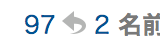

逆参照ポップアップを利用する
逆参照ポップアップを利用する
「逆参照ポップアップ」は、あるレスを参照しているレスを抽出する機能です。例えば、スレッドの 336 番のレスに対し、338 番目のレス、339 番目のレス、そして 341 番目のレスが「>>336」とアンカーを付けて返信しているとします。このとき、336 番目のレスで「逆参照ポップアップ」を使用すると、338、339、そして 341 番目のレスがまとめてポップアップ表示されます。
逆参照ポップアップを表示するには：
- レス番号の横に表示されている矢印マークの部分（下図参照）をクリックしたまま、ポップアップが表示されるまで少し待ちます。
 - または、レス番号をクリックして表示されるメニューから「逆参照」を選択します。
「詳細」環境設定の「ID や逆参照をポップアップする方法」を変更すると、逆参照ポップアップを表示するための操作を変更できます。
どのレス番号の横にも矢印マークが表示されていない場合は、「逆参照の数を表示する」設定が切になっていないかを確認してください。